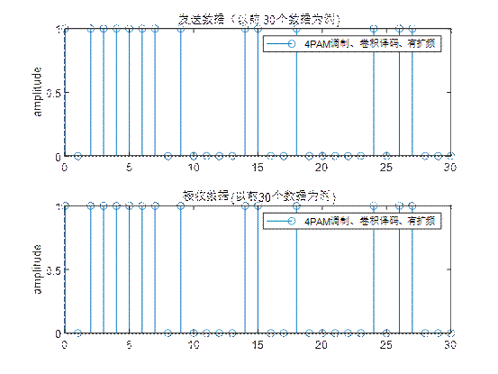
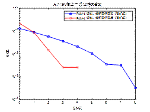

首先解释一下过程中使用的函数部分
shift.m
1 2 3 4 5 6 7 8 9 10 11 12 13 14 15 16 17 18 function [outregi] = shift (inregi,shiftr) v = length (inregi); outregi = inregi; shiftr = rem (shiftr,v); if shiftr > 0 outregi(:,1 :shiftr) = inregi(:,v-shiftr+1 :v); outregi(:,1 +shiftr:v) = inregi(:,1 :v-shiftr); elseif shiftr < 0 outregi(:,1 :v+shiftr) = inregi(:,1 -shiftr:v); outregi(:,v+shiftr+1 :v) = inregi(:,1 :-shiftr); end
这段代码通过对输入序列进行循环移位操作，支持正向（右移）和反向（左移）两种方式。
函数定义 :
function [outregi] = shift(inregi,shiftr)：定义了一个名为shift的函数，它接收两个参数：inregi（输入序列）和shiftr（要循环右移的位数），并返回一个参数：outregi（移位后的输出序列）。
变量初始化 :
v = length(inregi);：计算输入序列的长度，并将其存储在变量v中。outregi = inregi;：初始化输出序列outregi为输入序列inregi的一个副本。
计算实际移位数 :
shiftr = rem(shiftr,v);：使用rem函数计算shiftr除以v的余数，以确保移位数不超过序列长度。这是因为超过序列长度的移位等同于对序列长度取余后的移位。
循环移位操作 :
如果shiftr > 0（正数，表示循环右移）：
outregi(:,1:shiftr) = inregi(:,v-shiftr+1:v);：将输入序列的最后shiftr个元素移动到输出序列的开始位置。outregi(:,1+shiftr:v) = inregi(:,1:v-shiftr);：将输入序列的开始到v-shiftr位置的元素移动到输出序列的shiftr+1到v位置。
如果shiftr < 0（负数，表示循环左移）：
outregi(:,1:v+shiftr) = inregi(:,1-shiftr:v);：将输入序列的-shiftr位置到末尾的元素移动到输出序列的开始到v+shiftr位置。outregi(:,v+shiftr+1:v) = inregi(:,1:-shiftr);：将输入序列的开始到-shiftr位置的元素移动到输出序列的v+shiftr+1到v位置。
mesq.m
1 2 3 4 5 6 7 8 9 10 11 12 13 14 15 16 17 18 19 20 21 22 23 24 25 26 function [mout] = mseq (n, taps, inidata, num) mout = zeros (num,2 ^n-1 ); fpos = zeros (n,1 ); fpos(taps) = 1 ; for ii=1 :2 ^n-1 mout(1 ,ii) = inidata(n); temp = mod (inidata*fpos,2 ); inidata(2 :n) = inidata(1 :n-1 ); inidata(1 ) = temp; end if num > 1 for ii=2 :num mout(ii,:) = shift(mout(ii-1 ,:),1 ); end end
用于生成m序列（最大长度序列）。m序列是一种伪随机二进制序列，具有良好的自相关特性。函数定义和参数说明
function [mout] = mseq(n, taps, inidata, num)：定义了一个名为mseq的函数，它接收四个参数并返回一个参数：
n：m序列的阶数，决定了序列的长度为2^n - 1。taps：反馈寄存器的连接位置，这些位置决定了序列的生成规则。inidata：寄存器的初始值序列，用于开始生成序列的起始点。num：输出的m序列的个数，如果大于1，则每一行代表一个不同的m序列。mout：输出的m序列，如果num > 1，则每一行为一个m序列。初始化输出矩阵和反馈位置
mout = zeros(num,2^n-1);：初始化输出矩阵mout，大小为num行，2^n-1列，填充为0。fpos = zeros(n,1);：初始化一个长度为n的列向量fpos，用于标记反馈寄存器的位置。fpos(taps) = 1;：在fpos向量中，将taps指定的位置设置为1，表示这些位置参与反馈计算。生成第一个m序列 循环ii=1:2^n-1：对于序列的每一位进行循环。
mout(1,ii) = inidata(n);：将寄存器的最后一位输出到mout的第一行当前列。temp = mod(inidata*fpos,2);：计算反馈值，即inidata和fpos的点积后对2取模。inidata(2:n) = inidata(1:n-1);：将寄存器的值左移一位。inidata(1) = temp;：将计算出的反馈值放入寄存器的第一位。生成其他m序列（如果需要）
如果num > 1，则需要生成多个m序列。
循环ii=2:num：从第二个序列开始，对每个序列进行循环。
mout(ii,:) = shift(mout(ii-1,:),1);：使用shift函数（在之前的代码中定义）将前一个序列循环右移一位，生成新的序列。n决定，为2^n - 1。如果需要生成多个序列，后续序列通过将前一个序列循环右移一位来获得。
spread.m
1 2 3 4 5 6 7 8 9 10 11 12 13 14 15 16 17 18 19 20 21 22 23 24 25 26 27 function [out] = spread (data, code) switch nargincase { 0 , 1 } error('缺少输入参数' ); end [hn,vn] = size (data); [hc,vc] = size (code); if hn > hc error('缺少扩频码序列' ); end out = zeros (hn,vn*vc); for ii=1 :hn out(ii,:) = reshape (code(ii,:).'*data(ii,:),1 ,vn*vc); end
用于实现扩频技术中的扩频操作。通过将数据信号与一个扩频码序列相乘，增加信号的带宽，以提高信号的抗干扰能力和安全性。函数定义和参数说明
function [out] = spread(data, code)：定义了一个名为spread的函数，它接收两个参数data（输入数据序列）和code（扩频码序列），返回一个参数out（扩频后的输出数据序列）。输入参数检查
switch nargin：使用nargin检查函数调用时的输入参数个数。
case { 0 , 1 }：如果输入参数个数为0或1，即缺少必要的参数，则通过error('缺少输入参数');抛出错误提示。参数大小检查
[hn,vn] = size(data);和[hc,vc] = size(code);：分别获取data和code的行数和列数。
if hn > hc：如果data的行数大于code的行数，表示扩频码序列不足以对所有输入数据进行扩频，通过error('缺少扩频码序列');抛出错误提示。扩频操作
out = zeros(hn,vn*vc);：初始化输出数据序列out，其大小为hn行和vn*vc列。这里vn*vc表示每个数据元素将被扩展到原来的vc倍长度，即扩频操作的结果。
循环for ii=1:hn：对于data中的每一行（每个数据元素）进行循环。
out(ii,:) = reshape(code(ii,:).'*data(ii,:),1,vn*vc);：对于每个数据元素，将其与对应的扩频码序列相乘，然后使用reshape函数将结果调整为一行，形成扩频后的数据序列。这里使用了.'来进行转置操作，确保矩阵乘法的维度匹配。
这个spread函数通过将输入的数据序列与扩频码序列相乘，实现了扩频操作。该操作通常用于提高通信系统的抗干扰能力和安全性。通过对每个数据元素进行扩频，输出的数据序列长度增加，从而实现了信号的扩频。
despread.m
1 2 3 4 5 6 7 8 9 10 11 12 13 14 15 16 17 18 19 20 21 22 function out = despread (data, code) switch nargin case { 0 , 1 } error('缺少输入参数' ); end [hn,vn] = size (data); [hc,vc] = size (code); out = zeros (hc,vn/vc); for ii=1 :hc xx=reshape (data(ii,:),vc,vn/vc); out(ii,:)= code(ii,:)*xx/vc; end
这份代码是一个MATLAB函数，用于实现扩频通信技术中的解扩操作。解扩是扩频通信的一个重要环节，它将接收到的扩频信号与相同的扩频码序列相乘，以恢复原始的数据信号。下面是对这份代码的详细解释：函数定义和参数说明
function out = despread(data, code)：定义了一个名为despread的函数，它接收两个参数data（输入的扩频数据序列）和code（用于解扩的扩频码序列），返回一个参数out（解扩后的输出数据序列）。输入参数检查 switch nargin：使用nargin检查函数调用时的输入参数个数。
case { 0 , 1 }：如果输入参数个数为0或1，即缺少必要的参数，则通过error('缺少输入参数');抛出错误提示。参数大小检查和初始化输出序列
[hn,vn] = size(data);和[hc,vc] = size(code);：分别获取data和code的行数和列数。out = zeros(hc,vn/vc);：初始化输出数据序列out，其大小为hc行和vn/vc列。这里vn/vc表示解扩后数据的长度，假设扩频操作是均匀的，即每个数据元素扩展的长度为vc。解扩操作 循环for ii=1:hc：对于code中的每一行（每个扩频码序列）进行循环。
xx = reshape(data(ii,:),vc,vn/vc);：将输入的扩频数据序列data的当前行重新整形为vc行和vn/vc列的矩阵。这样做是为了匹配扩频码序列的长度，以便进行矩阵乘法。out(ii,:) = code(ii,:)*xx/vc;：将扩频码序列与对应的扩频数据矩阵相乘，然后除以vc，以恢复原始的数据信号。这里的除以vc是为了抵消扩频操作中的放大效应。despread函数通过将接收到的扩频数据序列与相同的扩频码序列相乘并适当调整，实现了解扩操作，恢复了原始的数据信号。这是扩频通信技术中的一个关键步骤，用于提高信号的抗干扰能力和保密性。
最后对OFDM.m分析
OFDM.m
参数设置
分析：T u T_{u} T u T G I T_{GI} T G I T s T_{s} T s T s = T u + T G I T_{s}=T_{u}+T_{GI} T s = T u + T G I N N N Δ f \Delta f Δ f Δ f = 1 T u \Delta f=\frac{1}{T_{u}} Δ f = T u 1 B B B B = N ∗ Δ f B=N*\Delta f B = N ∗ Δ f T S a m p l e T_{Sample} T S a m p l e T S a m p l e = 1 B = T u N T_{Sample}=\frac{1}{B}=\frac{T_{u}}{N} T S a m p l e = B 1 = N T u F s = 1 T S a m p l e = N T u F_{s}=\frac{1}{T_{Sample}}=\frac{N}{T_{u}} F s = T S a m p l e 1 = T u N
1 2 3 4 5 6 7 8 9 10 11 12 13 14 15 16 17 N_sc=52 ; N_fft=64 ; N_cp=16 ; N_symbo=N_fft+N_cp; N_c=53 ; M=4 ; SNR=0 :1 :25 ; N_frm=10 ; Nd=6 ; P_f_inter=6 ; data_station=[]; L=7 ; tblen=5 *L; stage = 3 ; ptap1 = [1 3 ]; regi1 = [1 1 1 ];
参数的详细解释：
N_sc=52;：系统子载波数，指的是用于传输数据的子载波的数量，不包括用于其他目的（如直流载波）的子载波。52由IEEE 802.11a标准 规定，（其中48个用于数据传输，4个用于导频信号）N_fft=64;：FFT（快速傅里叶变换）的长度。IEEE 802.11a WLAN标准，采用64点FFT来处理OFDM信号。N_cp=16;：循环前缀的长度。循环前缀是在每个OFDM符号前添加的，用于减少符号间干扰（ISI）和频率选择性衰落。较长的循环前缀可以提供更好的保护，因为它能覆盖更长的回声延迟，但会降低系统的频谱效率，因为更多的时间被用于传输冗余的循环前缀，而不是有效的数据N_symbo=N_fft+N_cp;：一个完整OFDM符号的长度，包括FFT长度和循环前缀的长度。N_c=53;：包含直流载波的总的子载波数。直流载波通常不用于传输数据，以避免直流偏移问题。M=4;：调制方式，这里使用的是4PAM（脉冲幅度调制），意味着每个符号可以表示2比特的信息。SNR=0:1:25;：信噪比，从0 dB到25 dB，以1 dB为步进。这是仿真中考虑的信噪比范围。N_frm=10;：每种信噪比下的仿真帧数，即对每个信噪比值，都会进行10帧的仿真。Nd=6;：每帧包含的OFDM符号数，表示每个仿真帧中包含的OFDM符号数量。P_f_inter=6;：导频间隔，指的是在OFDM符号中，导频信号之间的间隔。data_station=[];：导频位置，这里初始化为空，在后续代码中会进行设置。L=7;：卷积码的约束长度，这是卷积编码中的一个关键参数，影响编码的性能和复杂度。tblen=5*L;：Viterbi译码器的回溯深度，用于确定Viterbi算法在解码时的回溯长度。stage = 3;：m序列的阶数ptap1 = [1 3];：m序列的寄存器连接方式regi1 = [1 1 1];：m序列的寄存器初始值
产生基带数据
1 2 P_data=randi([0 1 ],1 ,N_sc*Nd*N_frm);
信道编码（卷积码）
区别于常规的线性分组码，卷积码是一种前向纠错编码技术，它可以在不增加额外传输带宽的情况下，通过引入冗余信息来提高通信的可靠性。卷积码是通过连续的输入比特流与一组固定的生成多项式进行卷积运算来生成编码比特流的。卷积编码的码字输出不仅与当前时刻的信息符号输入有关，还与之前输入的信息符号有关。
1 2 3 4 trellis = poly2trellis(7 ,[133 171 ]); code_data=convenc(P_data,trellis);
trellis = poly2trellis(7,[133 171]);：这行代码使用poly2trellis函数定义了一个卷积码的结构（称为trellis结构）。poly2trellis(7,[133 171])定义了一个(2,1,7)卷积码，其中：
第一个参数7表示约束长度（constraint length），它是编码器内存的长度加1，影响编码器的性能和复杂度。
数组[133 171]表示生成多项式（generator polynomials），用于确定如何从输入比特生成编码比特。这些值通常以八进制表示，分别对应于卷积编码器的两个输出分支的多项式。
code_data=convenc(P_data,trellis);：这行代码使用convenc函数对输入数据P_data进行卷积编码。P_data是待编码的原始数据，trellis是前面定义的卷积码结构。编码后的数据存储在code_data变量中。
PAM4调制
1 2 3 data_temp1= reshape (code_data,log2 (M),[])'; data_temp2= bi2de(data_temp1); modu_data=pammod(data_temp2,M);
data_temp1= reshape(code_data,log2(M),[])';：这行代码首先将code_data（卷积编码后的二进制数据）重新排列成一个新的矩阵data_temp1。reshape函数的第二个参数log2(M)计算了每个4PAM符号所需的比特数（对于4PAM，M=4，所以log2(M)=2），意味着每个符号由2比特组成。reshape函数的调用将code_data按每2比特一组进行分组，准备进行二进制到十进制的转换。最后的'（转置操作）是为了确保数据的维度与后续处理步骤相匹配。data_temp2= bi2de(data_temp1);：这行代码使用bi2de函数将上一步得到的二进制矩阵data_temp1转换为十进制数data_temp2。每行代表一个2比特的组合，转换结果是一个列向量，其中的每个元素对应于一个2比特组合的十进制值（范围从0到3）。modu_data=pammod(data_temp2,M);：最后，这行代码使用pammod函数对十进制数data_temp2进行4PAM调制。M参数指定了PAM调制的阶数，这里为4，表示4PAM调制。pammod函数将每个十进制数映射到一个特定的幅度值上，生成调制后的数据modu_data。
扩频
1 2 3 4 5 6 code = mseq(stage,ptap1,regi1,N_sc); code = code * 2 - 1 ; modu_data=reshape (modu_data,N_sc,length (modu_data)/N_sc); spread_data = spread(modu_data,code); spread_data=reshape (spread_data,[],1 );
code = mseq(stage,ptap1,regi1,N_sc);：这行代码使用mseq函数生成一个最大长度序列（M序列），用作扩频码。mseq函数的参数包括：
stage：寄存器的阶数，决定了序列的长度。ptap1：反馈多项式的抽头位置，用于生成伪随机序列。regi1：寄存器的初始状态。N_sc：子载波的数量，也是生成序列的长度。 生成的code是一个由1和0组成的序列。
code = code * 2 - 1;：这行代码将code中的0转换为-1，1保持不变。这样做是为了将扩频码的值调整为1和-1，便于后续的扩频操作。modu_data=reshape(modu_data,N_sc,length(modu_data)/N_sc);：这行代码将调制后的数据modu_data重新排列成一个矩阵，其行数等于子载波的数量N_sc，列数是原始数据长度除以N_sc。这样的排列是为了准备数据与扩频码的按位相乘。spread_data = spread(modu_data,code);：这行代码执行扩频操作。它将每个调制后的数据与扩频码code相乘，从而实现数据的扩频。spread_data=reshape(spread_data,[],1);：最后，这行代码将扩频后的数据spread_data重新排列成一个列向量，以便于后续的处理或传输。
扩频通信技术是一种信息传输方式，其信号所占有的频带宽度远大于所传信息必需的最小带宽；频带的扩展是通过一个独立的码序列来完成，用编码及调制的方法来实现的，与所传信息数据无关；在接收端则用同样的码进行相关同步接收、解扩及恢复所传信息数据
根据香农定理，带宽和信噪比可用互换，扩频扩展了带宽，则对信噪比的要求可降低。
导频
本质 ：导频不携带信息，导频是双方已知的数据，是用来做信道估计的。原理 ：将训练信号（导频）插入帧中，以便接收器可以根据导频和数据类似地失真的假设来估计信道响应。 设计了一种适当的导频模式来满足这种假设。使用原理 ：在接收机中，虽然利用接收到的段训练序列、长训练序列可以进行信道均衡、频率偏差校正，但符号还会存在一定的剩余偏差，且偏差会随着时间的累积而累积，会造成所有子载波产生一定的相位偏移。因此，还需要不断地对参考相位进行跟踪。要能实现这个功能，需要在52个子载波中插入导频符号。
1 2 3 4 5 6 7 8 9 10 11 12 13 14 15 16 17 18 19 20 21 22 P_f=3 +3 *1 i ; P_f_station=[1 :P_f_inter:N_fft]; pilot_num=length (P_f_station); for img=1 :N_fft if mod (img,P_f_inter)~=1 data_station=[data_station,img]; end end data_row=length (data_station); data_col=ceil (length (spread_data)/data_row); pilot_seq=ones (pilot_num,data_col)*P_f; data=zeros (N_fft,data_col); data(P_f_station(1 :end ),:)=pilot_seq; if data_row*data_col>length (spread_data) data2=[spread_data;zeros (data_row*data_col-length (spread_data),1 )]; end ;
P_f=3+3*1i;：定义导频频率为复数，实部和虚部都是3。P_f_station=[1:P_f_inter:N_fft];：计算导频的位置。这里假设P_f_inter是导频间隔，N_fft是FFT（快速傅里叶变换）的大小。这行代码生成一个从1开始，每隔P_f_inter个位置，直到N_fft的数组，表示导频在OFDM符号中的位置。pilot_num=length(P_f_station);：计算导频的数量，即P_f_station数组的长度。接下来的for循环用于计算数据的位置。循环遍历从1到N_fft的每个位置，如果该位置不是导频位置（即不是每隔P_f_inter的位置），则将其添加到data_station数组中。这个数组用于存储数据应该插入的位置。
data_row=length(data_station);：计算数据位置的数量，即data_station数组的长度。data_col=ceil(length(spread_data)/data_row);：计算需要的列数，以便将扩频后的数据spread_data分布到OFDM符号中。这里用扩频数据的长度除以数据位置的数量，然后向上取整，得到列数。pilot_seq=ones(pilot_num,data_col)*P_f;：创建一个矩阵pilot_seq，其大小为导频数量乘以列数，矩阵中的每个元素都设置为导频频率P_f。data=zeros(N_fft,data_col);：创建一个大小为N_fft乘以列数的零矩阵data，用于存放最终的OFDM符号数据，包括导频和数据。data(P_f_station(1:end),:)=pilot_seq;：将导频数据pilot_seq插入到data矩阵的相应位置。接下来的if语句检查是否有足够的位置放置所有扩频后的数据。如果data_row*data_col大于spread_data的长度，说明有额外的空间，需要用零填充这些空间。这里通过添加足够数量的零来补齐spread_data，确保其大小与data矩阵中的数据位置相匹配。
串并转换
1 2 3 data_seq=reshape (data2,data_row,data_col); data(data_station(1 :end ),:)=data_seq;
data_seq=reshape(data2,data_row,data_col);：这行代码将data2（重新排列成一个矩阵data_seq。data_row和data_col分别表示矩阵的行数和列数，这样的排列对应于OFDM系统中的串并转换过程。在OFDM系统中，数据首先以串行形式存在，然后通过串并转换过程被重新排列成并行数据块，以便进行后续的处理（如IFFT，插入导频等）。data(data_station(1:end),:)=data_seq;：这行代码将重新排列后的数据data_seq插入到之前创建的data矩阵中的指定位置。data_station数组包含了数据应该被插入的位置（即非导频位置）。这里，data(data_station(1:end),:)选择了data矩阵中对应于data_station指定的所有行，而data_seq被赋值给这些行，实现了数据和导频信号的合并。
IFFT
将这些频域数据转换回时域，得到ifft_data，这是OFDM系统中实际发送的时域信号。
插入保护间隔，循环前缀
1 2 Tx_cd=[ifft_data(N_fft-N_cp+1 :end ,:);ifft_data];
[ifft_data(N_fft-N_cp+1:end,:);ifft_data]：这部分代码执行了循环前缀的插入操作。首先，ifft_data(N_fft-N_cp+1:end,:)选取了ifft_data中的最后N_cp个样本（从N_fft-N_cp+1到end，即末尾）。然后，这些样本被复制并插入到ifft_data的前面，形成新的数组Tx_cd。这样，Tx_cd就包含了原始的IFFT结果和在其前面添加的循环前缀。
并串转换
1 2 Tx_data=reshape (Tx_cd,[],1 );
将处理过的OFDM信号从并行格式转换为串行格式，以便于在物理层进行传输
通过信道
1 2 3 4 5 Ber=zeros (1 ,length (SNR)); Ber2=zeros (1 ,length (SNR)); for jj=1 :length (SNR) rx_channel=awgn(Tx_data,SNR(jj),'measured' );
Ber=zeros(1,length(SNR)); 和 Ber2=zeros(1,length(SNR));：这两行代码初始化两个数组Ber和Ber2，它们的长度与SNR数组的长度相同。SNR数组包含了一系列信噪比值，用于模拟不同的信道条件。这些数组用于存储在不同信噪比下计算得到的误比特率（BER）。for jj=1:length(SNR)：这行代码开始一个循环，遍历SNR数组中的每一个信噪比值。循环变量jj从1到SNR数组的长度。rx_channel=awgn(Tx_data,SNR(jj),'measured');：这行代码使用MATLAB的awgn函数向Tx_data（发送的数据）添加高斯白噪声，模拟信号通过加性高斯白噪声信道的传输。SNR(jj)指定了当前迭代的信噪比值，'measured'选项告诉awgn函数基于Tx_data的实际功率来添加噪声，确保信噪比准确匹配指定的值。rx_channel变量存储了添加噪声后的接收信号。
再次串并转换
1 2 Rx_data1=reshape (rx_channel,N_fft+N_cp,[]);
它将接收到的串行信号转换为并行格式，以便进行后续的信号处理，如去除循环前缀、FFT等。在发送端，OFDM信号是以并行方式处理和生成的，而在物理层传输时则是以串行方式发送的。因此，在接收端需要将其还原为并行格式，以匹配发送端的处理流程。
去掉保护间隔、循环前缀
1 2 Rx_data2=Rx_data1(N_cp+1 :end ,:);
Rx_data2=Rx_data1(N_cp+1:end,:);：这行代码使用MATLAB的索引功能来去除每个OFDM符号的循环前缀。
Rx_data1：这是输入矩阵，包含了经过串并转换后的OFDM信号数据。每一列代表一个完整的OFDM符号，包括循环前缀和有效载荷。N_cp：这是循环前缀的长度。循环前缀是在每个OFDM符号前添加的一段重复的信号，用于减少符号间干扰（ISI）和频率选择性衰落的影响。N_cp+1:end：这个索引范围用于选择每个OFDM符号中除去循环前缀之后的部分。N_cp+1表示从循环前缀之后的第一个元素开始选择，end表示直到该列的最后一个元素。因此，这个操作去除了每个OFDM符号的循环前缀。:：这个符号表示选择所有列，即对Rx_data1矩阵中的每一列（每一个OFDM符号）都执行这个操作。Rx_data2：这是输出变量，存储了去除循环前缀后的OFDM信号数据。每一列代表一个去除了循环前缀的OFDM符号。
FFT
1 2 fft_data=fft(Rx_data2);
进行快速傅里叶变换，将每个OFDM符号从时域转换到频域。因为在发送端，OFDM信号是在频域生成的，通过IFFT转换到时域进行传输。因此，在接收端需要通过FFT将信号转换回频域，以匹配发送端的处理流程，从而进行数据解调和恢复原始信息。
信道估计与插值（均衡）
1 2 3 4 5 data3=fft_data(1 :N_fft,:); Rx_pilot=data3(P_f_station(1 :end ),:); h=Rx_pilot./pilot_seq; H=interp1( P_f_station(1 :end )',h,data_station(1 :end )','linear' ,'extrap' );
data3=fft_data(1:N_fft,:);：这行代码从fft_data矩阵中选取前N_fft行的所有列。fft_data是执行FFT后的数据，每一列代表一个OFDM符号的频域表示。N_fft是FFT的大小，即子载波的数量。这一步骤是为了从FFT结果中提取出对应于OFDM符号的部分。Rx_pilot=data3(P_f_station(1:end),:);：这行代码从data3中选取导频位置的数据。P_f_station是一个数组，包含导频的频域位置。这一步骤是为了从接收到的信号中提取出导频信号，用于后续的信道估计。h=Rx_pilot./pilot_seq;：这行代码计算信道估计值。Rx_pilot是接收到的导频信号，pilot_seq是已知的导频序列。通过将接收到的导频信号除以已知的导频序列，可以估计出信道的响应h。H=interp1(P_f_station(1:end)',h,data_station(1:end)','linear','extrap');：这行代码使用分段线性插值方法对信道响应进行插值。interp1是MATLAB中的一维插值函数，用于根据已知点（这里是导频位置P_f_station和对应的信道估计值h）对未知点（这里是数据子载波位置data_station）进行插值。'linear'指定使用线性插值方法，'extrap'指示对超出已知点范围的查询点进行外推。
信道校正
1 2 data_aftereq=data3(data_station(1 :end ),:)./H;
data_aftereq=data3(data_station(1:end),:)./H;：这行代码执行信道校正操作。
data3：这是一个矩阵，包含了执行FFT之后的数据。每一列代表一个OFDM符号的频域表示。data_station(1:end)：这是一个数组，指定了数据子载波的位置。data_station(1:end)表示选择data_station数组中的所有元素，即所有数据子载波的位置。data3(data_station(1:end),:)：这个表达式从data3中选取特定行（即数据子载波的位置）的所有列，即提取出所有OFDM符号中对应于数据子载波的部分。H：这是一个矩阵，包含了对所有子载波进行信道估计和插值后得到的信道响应值。每个元素代表一个子载波的信道响应估计值。./：这是MATLAB中的逐元素除法操作符。它将data3(data_station(1:end),:)中的每个元素与对应的H中的元素相除。data_aftereq：这是输出变量，存储了信道校正后的数据。信道校正是通过将接收信号的频域表示除以信道响应的估计值来实现的，目的是抵消信道效应，恢复发送端的原始信号。
并串转换
1 2 3 4 data_aftereq=reshape (data_aftereq,[],1 ); data_aftereq=data_aftereq(1 :length (spread_data)); data_aftereq=reshape (data_aftereq,N_sc,length (data_aftereq)/N_sc);
data_aftereq=reshape(data_aftereq,[],1);：这行代码使用reshape函数将data_aftereq矩阵重塑为一个列向量。reshape(data_aftereq,[],1)的作用是将data_aftereq中的所有元素按列优先顺序重新排列成一个单列矩阵（列向量），其中[]表示自动计算该维度的大小，以便包含data_aftereq中的所有元素。data_aftereq=data_aftereq(1:length(spread_data));：这行代码将data_aftereq列向量的长度调整为spread_data的长度。这是通过选取data_aftereq的前length(spread_data)个元素来实现的。此步骤确保data_aftereq的长度与spread_data相匹配。data_aftereq=reshape(data_aftereq,N_sc,length(data_aftereq)/N_sc);：最后，这行代码再次使用reshape函数将data_aftereq重塑成一个新的矩阵。这次，矩阵的行数为N_sc（可能代表子载波的数量），列数自动计算以确保包含所有元素，即length(data_aftereq)/N_sc。这一步实现了从串行数据到并行数据的转换。
解扩
1 2 demspread_data = despread(data_aftereq,code);
demspread_data = despread(data_aftereq,code);：这行代码执行解扩操作。
despread：这是一个函数，用于执行解扩操作。data_aftereq：这是解扩操作的输入，表示经过信道校正（均衡）后的数据。在OFDM系统中，信道校正是为了抵消信道对信号的影响，提高数据恢复的准确性。code：这是执行解扩操作所需的伪随机码，与发送端使用的扩频码相同。在扩频通信中，使用伪随机码将数据信号的带宽扩展，以提高信号的抗干扰能力和隐蔽性。demspread_data：这是解扩操作的输出，即解扩后的数据。解扩后的数据应接近于发送端原始的数据信号。
PAM4解调
1 2 3 4 5 demodulation_data=pamdemod(demspread_data,M); De_data1 = reshape (demodulation_data,[],1 ); De_data2 = de2bi(De_data1, log2 (M)); De_Bit = reshape (De_data2',1 ,[]);
demodulation_data=pamdemod(demspread_data,M);：这行代码执行PAM4解调操作。
pamdemod：这是MATLAB中的一个函数，用于执行PAM（脉冲幅度调制）解调。它将接收到的PAM信号转换回原始的数字信号。demspread_data：这是解调操作的输入，表示经过解扩后的数据。M：这是PAM调制的阶数，M等于4。demodulation_data：这是解调操作的输出，即解调后的数字信号。
De_data1 = reshape(demodulation_data,[],1);：这行代码使用reshape函数将demodulation_data重塑为一个列向量。这是为了将解调后的数据转换为一维数组，方便后续处理。De_data2 = de2bi(De_data1, log2(M));：这行代码将解调后的数字信号转换为二进制形式。
de2bi：这是MATLAB中的一个函数，用于将十进制数转换为二进制数。log2(M)：这是转换为二进制时每个数字需要的位数。对于PAM4，log2(M)等于2，因为PAM4使用4个幅度级别来表示2位的二进制数。
De_Bit = reshape(De_data2',1,[]);：这行代码将二进制数据De_data2转换为一维数组形式。
De_data2'：这是De_data2的转置操作，将矩阵的行和列互换。reshape(...,1,[])：这是将转置后的二进制数据重塑为一个单行向量，即将所有二进制位串联起来形成一个长的一维数组。
信道译码
1 2 3 4 trellis = poly2trellis(7 ,[133 171 ]); rx_c_de = vitdec(De_Bit,trellis,tblen,'trunc' ,'hard' );
trellis = poly2trellis(7,[133 171]);：这行代码定义了一个Trellis结构，用于维特比译码。
poly2trellis：这是MATLAB中的一个函数，用于根据给定的约束长度和生成多项式创建Trellis结构。这个Trellis结构是维特比译码算法的输入之一。7：这是编码器的约束长度。[133 171]：这是编码器的生成多项式，用八进制表示。这些多项式定义了编码过程中的反馈和前馈连接。
rx_c_de = vitdec(De_Bit,trellis,tblen,'trunc','hard');：这行代码执行维特比译码。
vitdec：这是MATLAB中的一个函数，用于执行维特比译码。维特比译码是一种最大似然译码算法，广泛用于解码卷积编码。De_Bit：这是维特比译码的输入，表示待译码的二进制数据。trellis：这是前面定义的Trellis结构，表示卷积编码的结构。tblen：这是维特比算法的追踪回溯长度，用于确定算法在做决策时考虑的历史信息的深度。'trunc'：这指定了译码时使用的终止方式，'trunc'表示截断终止，即假设编码序列在开始和结束时都处于零状态。'hard'：这指定了译码的判决方式，'hard'表示硬判决，即直接根据接收到的比特值（0或1）进行译码，与之相对的是软判决。
rx_c_de：这是维特比译码的输出，即译码后的数据。
计算误码率
1 2 3 [err,Ber2(jj)] = biterr(De_Bit(1 :length (code_data)),code_data); [err, Ber(jj)] = biterr(rx_c_de(1 :length (P_data)),P_data);
[err,Ber2(jj)] = biterr(De_Bit(1:length(code_data)),code_data);：这行代码计算译码前的误码率。
biterr：这是MATLAB中的一个函数，用于计算两个二进制向量之间的误码数和误码率。它返回两个值，第一个是误码数（err），第二个是误码率（在这里存储在Ber2(jj)中）。De_Bit(1:length(code_data))：这是译码前的二进制数据，通过索引选择与原始数据code_data长度相同的部分，以便进行比较。code_data：这是原始的二进制数据，用作比较的基准。Ber2(jj)：这是存储计算出的误码率的变量，jj是循环索引，表示这个误码率是迭代下的结果。
[err, Ber(jj)] = biterr(rx_c_de(1:length(P_data)),P_data);：这行代码计算译码后的误码率。
rx_c_de(1:length(P_data))：这是译码后的二进制数据，通过索引选择与原始数据P_data长度相同的部分，以便进行比较。P_data：这是译码操作之前的原始数据，用作比较的基准。Ber(jj)：这是存储计算出的译码后误码率的变量，同样，jj是循环索引。
实验结果


使用的技术
保护间隔 信道编码 扩频 导频
代码主要参考OFDM完整仿真过程及解释（MATLAB） - 知乎 (zhihu.com)